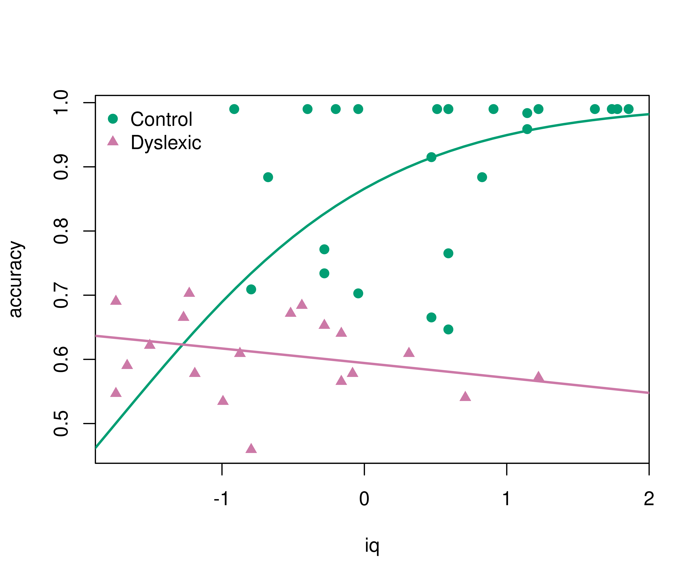

Beta Regression
Overview
The R package betareg provides:
Beta regression for modeling beta-distributed dependent variables on the open unit interval (0, 1), e.g., rates and proportions, see Cribari-Neto and Zeileis (2010, doi:10.18637/jss.v034.i02).
Extended-support beta regression models for variables on the closed unit interval [0, 1] with boundary observations at 0 and/or 1, see Kosmidis and Zeileis (2025, doi:10.1093/jrsssc/qlaf039).
Alternative specifications of the classical beta regression model: Bias-corrected and bias-reduced estimation, finite mixture models, and recursive partitioning for (0, 1) beta regression, see Grün, Kosmidis, and Zeileis (2012, doi:10.18637/jss.v048.i11).
Installation
The stable version of betareg is available on CRAN:
install.packages("betareg")The latest development version can be installed from R-universe:
install.packages("betareg", repos = "https://zeileis.R-universe.dev")License
The package is available under the General Public License version 3 or version 2
Illustration
A nice first illustration of beta regression is the analysis of reading accuracy scores from primary school children from Smithson & Verkuilen (2006). Package and data can be loaded via:
The reading accuracy was scaled to be within (0, 1). Its mean is explained by verbal iq score with separate lines by dyslexia (control vs. dyslexic). The precision parameter is explained by main effects of the two explanatory variables. More details are provided in ?ReadingSkills.
br <- betareg(accuracy ~ dyslexia * iq | dyslexia + iq, data = ReadingSkills)
summary(br)
##
## Call:
## betareg(formula = accuracy ~ dyslexia * iq | dyslexia + iq, data = ReadingSkills)
##
## Quantile residuals:
## Min 1Q Median 3Q Max
## -2.3625 -0.5872 0.3026 0.9425 1.5874
##
## Coefficients (mean model with logit link):
## Estimate Std. Error z value Pr(>|z|)
## (Intercept) 1.1232 0.1428 7.864 3.73e-15 ***
## dyslexia -0.7416 0.1428 -5.195 2.04e-07 ***
## iq 0.4864 0.1331 3.653 0.000259 ***
## dyslexia:iq -0.5813 0.1327 -4.381 1.18e-05 ***
##
## Phi coefficients (precision model with log link):
## Estimate Std. Error z value Pr(>|z|)
## (Intercept) 3.3044 0.2227 14.835 < 2e-16 ***
## dyslexia 1.7466 0.2623 6.658 2.77e-11 ***
## iq 1.2291 0.2672 4.600 4.23e-06 ***
## ---
## Signif. codes: 0 '***' 0.001 '**' 0.01 '*' 0.05 '.' 0.1 ' ' 1
##
## Type of estimator: ML (maximum likelihood)
## Log-likelihood: 65.9 on 7 Df
## Pseudo R-squared: 0.5756
## Number of iterations: 25 (BFGS) + 1 (Fisher scoring)The regression summary shows that accuracy increases with iq for the control group but not for the dyslexic group (even slightly decreases). This can be brought out more clearly graphically. This also highlights that the model employs a logit link so that the fitted curves always remain within (0, 1).
pal <- palette.colors()[c(4, 8)]
pch <- c(19, 17)
plot(accuracy ~ iq, data = ReadingSkills, col = pal[dyslexia], pch = pch[dyslexia])
iq <- -30:30/10
lines(iq, predict(br, newdata = data.frame(dyslexia = "no", iq = iq)), col = pal[1], lwd = 2)
lines(iq, predict(br, newdata = data.frame(dyslexia = "yes", iq = iq)), col = pal[2], lwd = 2)
legend("topleft", c("Control", "Dyslexic"), pch = pch, col = pal, bty = "n")
Extended models
For going beyond this basic analysis the following extensions can be considered.
Extended-support beta regression
To analyze the original accuracy scores in [0, 1] (without scaling the perfect scores of 1 to 0.99), use the variable accuracy1 (instead of accuracy) in the code above. The betareg() model then automatically estimates an additional exceedence parameter that accounts for the boundary probability of a perfect score. For this data set, most coefficients shrink a bit, rendering some coefficients only weakly significant but the qualitative interpretations still remain similar.
betareg(accuracy1 ~ dyslexia * iq | dyslexia + iq, data = ReadingSkills)See Kosmidis and Zeileis (2025) and the documentation of betareg() for more details.
Bias reduction
Bias-reduced estimation (instead of the default maximum likelihood estimation) can be used by adding the argument type = "BR" in betareg(). This slightly shrinks all coefficient estimates but, on this data, leads to qualitatively identical results.
betareg(accuracy ~ dyslexia * iq | dyslexia + iq, data = ReadingSkills, type = "BR")See Grün et al. (2012) and the documentation of betareg() for more details.
Beta regression trees
To find subgroups in a beta regression by recursively splitting subsamples, beta regression trees can be used. Here, this strategy can be used to figure out the different iq effects by dyslexia rather than fixing the variables’ interaction in advance.
betatree(accuracy ~ iq | iq, ~ dyslexia + ..., data = ReadingSkills, minsize = 10)See Grün et al. (2012) and the documentation of betatree() for more details.
Finite mixtures of beta regressions
To find clusters in a beta regression finite mixtures of beta regressions can be used. Here, this technique can be employed to find the different iq effects in the data without even requiring the dyslexia information.
betamix(accuracy ~ iq, data = ReadingSkills, k = 3, ...)See Grün et al. (2012) and the documentation of betamix() for more details.